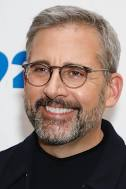
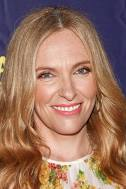
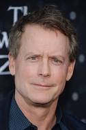
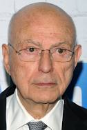
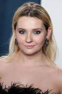

Steven John Carell is an American actor and comedian. He played Michael Scott in The Office, NBC's adaptation of the British series created by Ricky Gervais and Stephen Merchant, where Carell also worked as an occasional producer, writer and director
Toni Collette

Toni Collette Galafassi is an Australian actress, producer, singer, and songwriter. Known for her work in television and independent films, she has received various accolades throughout her career, including a Golden Globe Award, a Primetime Emmy Award, and five AACTA Awards, in addition to nominations for an Academy Award, a Tony Award, and two BAFTA Awards
Paul Dano
Paul Franklin Dano is an American actor. He began his career on Broadway. He won the Independent Spirit Award for Best Debut Performance for his role in L.I.E. and gained wider recognition for playing a troubled teenager in Little Miss Sunshine.
Greg Kinnear

Gregory Buck Kinnear is an American actor. He was nominated for an Academy Award for Best Supporting Actor for his role in As Good as It Gets.
Alan Arkin

Alan Wolf Arkin is an American actor, director and screenwriter known for his performances on stage and screen. (very descriptive)
Abigail Breslin

Abigail Breslin is an American actress. She rose to prominence with the comedy-drama film Little Miss Sunshine, for which she received a nomination for the Academy Award for Best Supporting Actress at age 10.